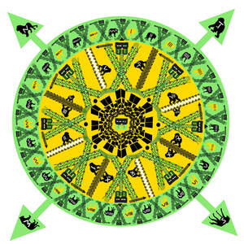

Trade Mark Journal No.2026/009 27 February 2026
UK00004312312 17 December 2025 (25)

- Class 25
- Aprons; clothing; articles of clothing; menswear; womenswear; beanies; beanie hats; baseball caps; bomber jackets; boxing shorts; briefs (underwear); button down shirts; casual clothing; casual shirts; printed T-shirts; shirts; short-sleeved shirts; short-sleeved T-shirts; sweatshirts; sweatpants; sweatshorts; T-shirts; swim trunks; baseball caps; bomber jackets; boxing shorts; briefs (underwear); button down shirts; casual clothing; casual shirts; printed T-shirts; shirts; short- sleeved shirts; short-sleeved T-shirts; sweatshirts; sweatpants; sweatshorts; T-shirts; swim trunks; athletic clothing; athletics vests; beach clothing; beach clothes; beach footwear; beachwear; blue jeans; board shorts; boardshorts; briefs; caps (headwear); clothes for sports; deck shoes; denim jackets; denim coats; denim shoes; denim jeans; denim pants; denims (clothing); face mask (clothing); face masks (fashionwear); football boots; football boots (Studs for -); football shirts; football socks; flip-flops; flip-flops for use as footwear; football jerseys; gloves; gym shorts; gymwear; headgear; hooded pullovers; hooded sweatshirts; footwear; hooded tops; hoodies; jackets (clothing); jackets being sports clothing; jeans; jogging bottoms (clothing); jogging bottoms; jogging pants; jogging outfits; jogging tops; jumpers; jumpers (pullovers); jumpers (sweaters); long-sleeve pullovers; long-sleeved shirts; long underwear; mankinis; men’s clothing; men’s underwear; men’s socks; military boots; pants; padded pants for athletic use; padded shirts for athletic use; padded shorts for athletic use; polo shirts; printed t- shirts; rash guards; running vests; shorts; short trousers; snowboard boots; snowboard jackets; snowboard gloves; snowboard shoes; snowboard trousers; sports pants; sportswear; sweat bands; suspenders; suspenders (braces); sweat bands for the head; sweat bands for the wrist; sweatpants; sweaters; sweat bottoms; sweat jackets; sweat pants; sweat shirts; swim trunks; swimming caps; tank tops; tank- tops; thermal clothing; thermal headgear; thermal socks; thermal underwear; tracksuits; track jackets; track pants; tracksuit bottoms; tracksuit tops; triathlon clothing; trunks; trunks being clothing; trunks (Bathing -); underpants; vest tops; vests; wristbands; wrist bands. .
ROCKYIE JASON BEASTY JACK SHIELSONE